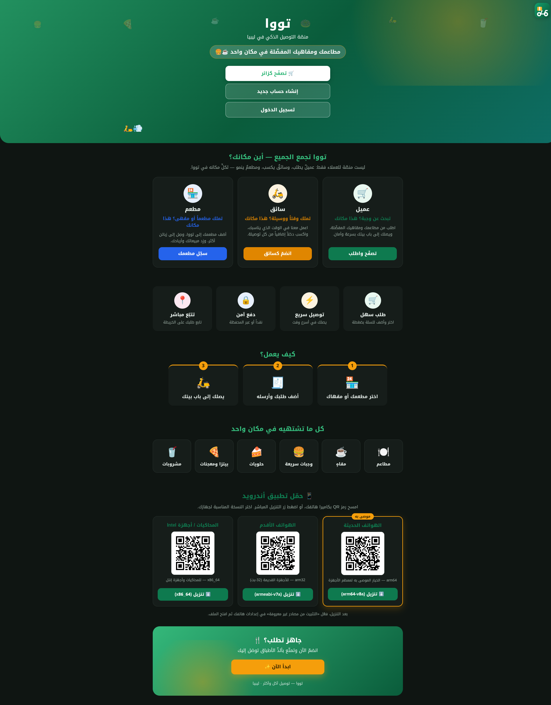
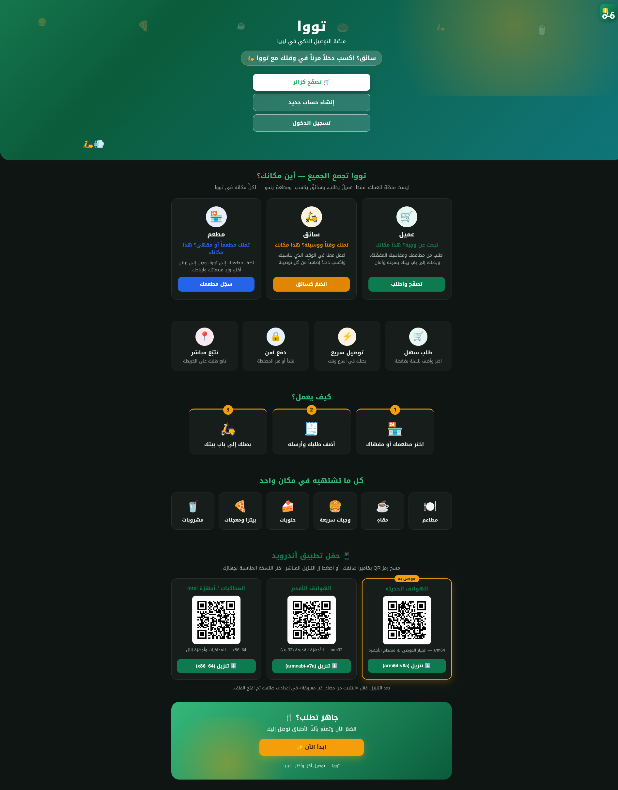

codex مستقلّة، إصلاح النتائج الصحيحة، مراجعتي المباشرة الخاصّة، وأخيرًا النشر الحيّ الكامل على المواضع الأربعة الإلزامية (GitHub · test1/Kali · test/.194 · Production/Hetzner).نُفِّذت خطة 464 المنقّحة (41 بندًا موزَّعة على 11 عنقودًا A→K، بعد أن استبعدت المحاكاة العدائية المسبقة 16 مصيدة "قاطعة" كانت ستُفسد التنفيذ الحرفي) بالتسلسل المُقرَّر بالضبط، بلا توقّف، عبر 40 التزام (commit) منفصل على فرع fix/464-full-remediation-2026-07-10. بعد اكتمال التنفيذ: تشغيل كامل مجموعتَي الاختبارات (خلفي + واجهة) وE2E، مراجعة مستقلّة بأداة codex على الفرق الفعلي (94 ملفًا، 4724 إضافة/733 حذف بعد استبعاد الملفّات المولَّدة آليًّا)، إصلاح النتيجتين الصحيحتين اللتين وجدتهما عبر وكيل مُخصَّص، مراجعة مباشرة خاصّة بي وجدت وأصلحت عيبًا إضافيًّا واحدًا، ثمّ — بإذن صريح من المالك — نشر كامل حيّ على المواضع الأربعة الإلزامية.
كل بند من الـ41 لم يُنفَّذ حرفيًّا كما ورد في الخطة الأصلية، بل وفق النسخة المُصحَّحة التي أنتجتها المحاكاة العدائية المسبقة (11 وكيلًا، 117 مشكلة مكتشَفة، 16 قاطعة) — أي أنّ كل إصلاح هنا يحمل بالفعل حراسة null، تسلسلًا صحيحًا للنشر، واختبارًا انحداريًّا يثبت أنّه كان سيفشل على الكود القديم وينجح على الجديد. هذا التقرير يوثِّق ما شُحِن فعليًّا — لا ما خُطِّط له فقط.
الترقيم أدناه يطابق عناقيد خطة 464 الأصلية (A→K). كل بطاقة تُظهر: المشكلة الأصلية، الإصلاح الفعلي الذي شُحِن، والالتزام (commit) الذي يحمله.
web/src/api/auth.ts + ملف Flutter المقابل: تغيير المفتاح المُرسَل من otp إلى otp_code. اختبار جديد يتحقّق من محتوى الجسم الفعلي المُرسَل (لا فقط رمز الاستجابة) في كلا المنصّتين.webauthn_router.py) — كان يفشل بصمت لعميل يكتب الرقم بصيغة محلّية./customer/me/name-cooldown بدالّة مساعدة مشتركة _cooldown_state() مع مسار PUT الحالي (لا انحراف حسابات بينهما). واجهة: web/src/api/customer.ts تستدعي المسار الحقيقي وتُهايئ الاستجابة./provider/me/name-change-request يُعيد آخر طلب بأي حالة، مع طيّ حالة STALE إلى "لا يوجد طلب نشِط". واجهة: تصحيح اسم الحقل + تطبيع كامل للاستجابة (تفرّع على request_id مقابل applied) قبل تمريرها لصفحة الإعدادات، مع تحديث كل عمليات المقارنة إلى الحالة الكبيرة (PENDING/APPROVED/REJECTED/STALE) المُطابِقة للخلفية الفعلية.OpsNameChangeRequests.tsx أُعيدت كتابتها بالكامل لتطابق الشكل الحقيقي (role, principal_id, new_value, حالة كبيرة تشمل STALE).evalData?.manual_evaluation?.stars ?? 0 — لا مفرد. اختبار جديد إلزامي يتحقّق تحديدًا من عدم الانهيار حين تكون manual_evaluation فارغة (الحالة الأغلب فعليًّا).icon على عنصر Marker واحد (لا تكرار عنصرَين، تفاديًا لانحراف نصّ النافذة المنبثقة).RouteErrorBoundary.tsx (useRouteError()، تطبيع دفاعي للخطأ، رابط عودة HTML عادي لا React Router) مربوط في router.tsx وopsRouter.tsx وكل مسار من الخمسة قبل تسجيل الدخول.react-leaflet فعليًّا بلا mock — يغطّي الحالة الشائعة (بلا سهم) والحالة الظاهرة (بسهم اتجاه).subject: str = Field(default="استفسار عام", ...) — بلا migration، بلا تعديل واجهة (كما توقّعت الخطة بالضبط).toowa_cart:{userId} بدل مفتاح عامّ واحد) + hasAnyItems() يميّز "لا عربة" عن "عربة فارغة-بعد-دفع"، + دمج حقيقي (لا استبدال) عند انتقال ضيف→تسجيل دخول.compute_request_hash() الخلفي (تحقّقتُ من هذا حرفيًّا مقابل idempotency.py أثناء مراجعتي المباشرة — القسم ٨) — مفتاح مُذكَّر (memoized) عبر useRef، يُعاد استخدامه فقط إن لم يتغيّر التوقيع، بالإضافة لحارس submittingRef متزامن يغلق فجوة الضغط المزدوج قبل إعادة الرسم.scheduled_for بلا كسر الاختبار الموجود الحسّاس لحالة علم شحن المحفظة (المصيدة القاطعة رقم 7 في الخطة الأصلية) — رسائل رصيد المحفظة تُركت كما هي، لم تُوحَّد.commit() داخل الدالّة المشتركة (لا عند نقطة القراءة فقط) كان سيُنهي معاملات أخرى أكبر قبل اكتمالها — خطر حقيقي على سلامة البيانات المالية.await db.commit() أُضيف في طبقة الراوتر فقط (بعد كل استدعاء get_or_create_*)، لا داخل دالّة الخدمة المشتركة — يحافظ على استقلالية المعاملات: GET /wallets/me، GET /payment-methods/resolve، GET /pilot/config، GET /pilot/soft-launch-readiness، GET /soft-launch/status، GET /soft-launch/entry-check. أُثبِت بتقنية "محاكاة تراجُع حدود الطلب" (rollback فوري بعد الطلب، تحقّق قبل أي طلب ثانٍ) أنّ الصفّ يبقى محفوظًا فعليًّا لا مُفرَّغًا فقط."TRANSFER" في GET /wallets/me/transactions — استعلام WHERE مُقيَّد بـ(المُرسِل=المستخدم أو المُستقبِل=المستخدم)، اتّجاه/طرف-مقابل محسوبان من منظور المستخدم الحالي، تعمية اسم الطرف المقابل (_mask_name من transfer_router.py). واجهة: WalletPage.tsx فرع عرض جديد لهذا النوع.PATCH /notifications/{id}/archive — مسار لم يكن موجودًا إطلاقًا رغم أنّ الواجهة تستدعيه دائمًا؛ يتحقّق من الملكية (لا IDOR) وأنّ الحالة READ قبل الأرشفة (404/422 مناسبان). + إصلاح mark_read() نفسها لتُحفَظ عبر حدود الطلب (كانت flush فقط).get_db() لا يُثبِّت تلقائيًّا عند عودة عادية، فكان الإبطال بأكمله يُتراجَع عنه صامتًا عند إغلاق الجلسة. هذا يعني أنّ آلية كشف سرقة توكِن التحديث كانت عديمة الأثر فعليًّا في الإنتاج — كل من المهاجم والضحية يبقيان بجلسات عاملة.await db.commit() أُضيف في كلا مسارَي except AccountFrozen وexcept (TokenInvalid, TokenRevoked) في /auth/refresh. 2) نافذة سماح 10 ثوانٍ (_REUSE_GRACE_SECONDS) في jwt_service.py: إعادة استخدام داخل النافذة → رفض 401 بلا إبطال العائلة (يمتصّ سباق طلبات متزامنة شرعي — تبويبان لنفس الحساب)؛ خارج النافذة → إبطال العائلة الكامل كما كان (فشل مغلق، محفوظ).MINIO_ENDPOINT: minio:9000 — اسم مضيف الحاوية الصحيح (127.0.0.1 داخل مساحة اسم backend-core الخاصّة لا تصل لأي شيء؛ MinIO حاوية منفصلة). ربط MinIO الآمن على المضيف (127.0.0.1:9000/9001) لم يُلمَس إطلاقًا — منطقتان مختلفتان تمامًا.ERRAND_ENABLED: ${ERRAND_ENABLED:-false} — افتراضي آمن مُطفَأ في كل مكان لا يُحدَّد المتغيّر صراحةً؛ التفعيل الفعلي يبقى بيد كل بيئة عبر ملفّها الخاصّ .env. طُلِب إذن منفصل صريح (سؤال مباشر للمالك) قبل هذا البند تحديدًا لأنّ الخطة نفسها صنّفته كذلك — أُجيب بـ"نعم أضِف الربط".i18n-hardcoded-strings.test.ts + لقطة خطّ أساس 1754 سطرًا) يفشل فقط عند ظهور نصّ عربي مُضمَّن-في-الكود جديد يتجاوز خطّ الأساس الحالي — لا يُطبَّق بأثر رجعي على المخالفات الموجودة بالفعل (867 مخالفة قديمة لم تُفشِل شيئًا). بالضبط النمط المُوصى به في القسم "الأنماط الجذرية" من خطة 464.npm run i18n:status / i18n:lint — استشاريّان فقط، لا يمنعان الدمج.singleton_key + قيد UNIQUE + قيد CHECK(=true) على كلا الجدولين، مُطبَّقان بترحيلَي Alembic منفصلَين (ab26/ab27)، مُتحقَّقَين على حاوية Postgres 16 مؤقّتة (سلسلة كاملة + جولة downgrade/upgrade).هذا البند الوحيد من الـ41 الذي لم يُشحَن — بقرار واعٍ، لا فشلًا صامتًا. التسلسل الكامل موثَّق هنا بأمانة لأنّه يحمل درسًا جوهريًّا لأي محاولة مستقبلية.
i18next-cli extract --sync-primary--dry-run) قبل طلب الإذن. عند التشغيل الفعلي، الأمر حذف 302 مفتاح موجود من ar.json وأحدث تغييرات ضخمة (2840-2856 سطرًا) غير متّصلة في en.json/fr.json — لا يطابق إطلاقًا ما وُصِف للمالك.
git checkout) قبل أن يُعتَمَد أي منها — لم يُترَك أي أثر جزئي.collections.OrderedDict (لا sort_keys=True التي كانت ستنتج فروقات ضخمة غير قابلة للمراجعة) يُضيف فقط المفاتيح الجديدة الحقيقية إلى ar.json (+801 مفتاح، مُستبعِدًا 33 مفتاحًا بقيم فارغة نتجت عن قوالب ديناميكية — `${n} نجوم` — لا يفهمها المستخرِج الساكن)، مع إصلاح عيبَي تعارض تسمية حقيقيَّين اكتُشِفا أثناء العمل (ops.gate_board وops.wallet_velocity — كل منهما كان مفتاحًا-ورقة وبادئة-مساحة-اسم في آنٍ معًا).i18n-parity.test.tsar/en/fr — يجب أن تكون متطابقة تمامًا، بغضّ النظر عن اكتمال الترجمة الفعلية. ملء ar.json وحدها يكسر هذا الثابت مباشرةً. وملء en/fr بقيم فارغة كان سيُنتِج نفس مصيدة "نصّ فارغ بدل احتياطي defaultValue الصحيح" التي اكتُشِفت مسبقًا مع المفاتيح الديناميكية الـ33 — بمقياس أكبر بكثير.تراجُع كامل عن كل تغييرات T5 (ar.json، en.json، fr.json، opsNav.ts، OpsGateBoard.tsx) إلى حالة HEAD الأصلية. السبب الجذري: ملء مفاتيح الترجمة عبر الوسيلة الميكانيكية (سكربت/أداة استخراج) ليس مهمّة ميكانيكية فعليًّا هنا — ثابت التكافؤ الصارم القائم يجعلها مهمّة ترجمة حقيقية تحتاج نصًّا إنجليزيًّا/فرنسيًّا صحيحًا فعليًّا، لا مجرّد نسخ مفاتيح. المفاتيح غير المُترجَمة تبقى "مُتوارَثة" لا "معطوبة" — الاحتياطي الحالي (defaultValue المضمَّن-بالكود لكل استدعاء) يستمرّ بالعمل تمامًا كما هو، بلا أي تراجع. التوصية: جلسة مخصَّصة للترجمة الحقيقية لاحقًا، لا محاولة أخرى ميكانيكية.
npx vitest run src/test/i18n/ بعد التراجُع الكامل = 24/24 ✅ (كلاهما nav-keys-present.test.ts وi18n-parity.test.ts يعودان للأخضر)."strict": true يوضح: مئات الحقول ?: عبر src/api/*.ts ومكوّنات الواجهة تعتمد على تبادلية "تعيين undefined" و"حذف المفتاح" — تفعيل هذا الخيار يحتاج تدقيقًا فرديًّا لكل موقع، بمقياس/خطر مشابه لفجوة تكافؤ الترجمة المكتشَفة في T5. تحقّقتُ أنّ tsc --noEmit يقرأ tsconfig.json بصيغة JSONC (تعليقات مسموحة) بلا أي مشكلة، وأنّ npm run build/lint يمرّان بلا تأثّر.| المجموعة | النتيجة | ملاحظات |
|---|---|---|
| Backend pytest | 3203 نجح / 4 تخطّي / 0 فشل | لا فشل واحد — تجاوز خطّ الأساس التاريخي (1764) بكثير نتيجة نموّ الشجرة منذ آخر توثيق رسميّ |
| Frontend Vitest | 1498 نجح / 1 فشل | الفشل الوحيد (pwa-config.test.ts) سابق للفرع — تحقّقتُ عبر git log/merge-base --is-ancestor أنّ skipWaiting:true في vite.config.ts جاء من الالتزام f058e67، سابق لأي التزام من الـ40 — لم يُلمَس هذا الملف إطلاقًا في هذا التنفيذ |
| Typecheck / Lint / Build | نظيف | 0 أخطاء typecheck، 0 أخطاء lint (7 تحذيرات سابقة غير متعلّقة)، build ينجح |
| E2E (mocked) | 40 نجح / 0 فشل | مطابق تمامًا لخطّ الأساس الموثَّق "40/40"؛ 22 اختبارًا إضافيًّا لم يُشغَّل ينتمي لتهيئات playwright منفصلة (real-auth/container) |
شُغِّل codex review --base 833a477 (النقطة الصحيحة لبداية فرع 464 — تحقّقتُ منها عبر تتبّع أوّل التزام T1.1 وأخذ والده مباشرةً، بعد أن اكتشفتُ أنّ نقطة الالتقاء مع master تتضمّن بالخطأ دفعتَي عمل سابقتَين غير متّصلتَين 455/459).
| # | النتيجة | القرار |
|---|---|---|
| 1 | اسم حاوية redis ثابت (f40a1042822c_...) في _agent_testing/admin_harness.py:23 | خارج النطاق عمل غير مُلتزَم (uncommitted) من مهمّة أخرى غير متعلّقة، لم يُلمَس |
| 2 | [P2] ترحيل ab26 يفشل لو كان لجدول pilot_configs أكثر من صفّ مسبقًا (بالضبط السباق الذي كان الترحيل يُصلِحه) | صحيحة — أُصلِحت |
| 3 | [P2] نفس العيب في ترحيل ab27 لـsoft_launch_states | صحيحة — أُصلِحت |
op.execute(DELETE FROM ... WHERE id NOT IN (SELECT id ... ORDER BY created_at ASC, id ASC LIMIT 1)) أُضيفت قبل إنشاء قيد UNIQUE في كلا الترحيلين — تُبقي الصفّ الأقدم فقط. اختُبِر على حاوية Postgres 16 مؤقّتة بإدخال 3 صفوف مكرَّرة يدويًّا (محاكاة السباق الفعلي) قبل الترحيل: نجح الترحيل وانهارت الصفوف الثلاثة إلى صفّ واحد صحيح — حيث كان سيفشل قبل الإصلاح. تحقّقتُ يدويًّا من الالتزام (git show --stat) وتأكّدتُ أنّ الوكيل لم يلمس أي ملفّ آخر من العمل غير المتعلّق الموجود في الشجرة العاملة.test_phase11_pilot.py + test_phase12_soft_launch.py: 39/39 ✅مراجعة مستقلّة يدوية على أخطر مناطق الفرق: أمن JWT، تعرّض بيانات المحفظة الماليّة، IDOR في مسار الإشعارات، الترحيلات بعد إصلاح T9، docker-compose، عزل السلّة، وتوقيع idempotency في checkout (تحقّقتُ منه حرفًا-بحرف مقابل compute_request_hash() الخلفي الفعلي).
await db.commit() في check_entry قال "يحفظ إعداد التجربة التجريبية" (منسوخ من pilot_router.py) بينما الدالّة الفعلية تحفظ حالة الإطلاق التدريجي، لا إعداد التجربة.
test_phase12_soft_launch.py: 19/19 ✅التحقّق اليدوي من منطق نافذة سماح JWT (تسلسل زمني/timezone صحيح، تحقَّق تجريبيًّا عبر اختبار الخلفية)، استعلام تحويلات المحفظة (WHERE مُقيَّد بالمستخدم الحالي فقط — لا IDOR)، مسار أرشفة الإشعار (مُقيَّد بالمُستلِم — 404 لا 403 لتفادي التعداد)، وتوقيع idempotency (يطابق الحقول الست المُهاشة خلفيًّا حرفًا-بحرف) — كلّها سليمة، بلا استثناء.
بإذن صريح من المالك (سؤال مباشر قبل أي عملية نشر إنتاجية، وفق القاعدة القياسية للمشروع). التسلسل: GitHub → test1 (Kali) → test (.194 Ubuntu LAN) → Production (Hetzner).
| # | الموضع | الحالة | التحقّق |
|---|---|---|---|
| 1 | GitHub | ✅ منشور | master تقدَّم بسرعة (fast-forward) من 1f1d8be إلى a85423f؛ فرع الميزة مرفوع أيضًا للتتبّع |
| 2 | test1 — Kali (محلّي) | ✅ منشور | إعادة بناء الصورتين محليًّا (الكود موجود مسبقًا في نفس المسار)، ترحيل إلى ab27، فحص سلامة 200 على المنفذ 8080 |
| 3 | test — .194 Ubuntu LAN | ✅ منشور | صورتا Docker بُنيتا على Kali ونُقِلتا مباشرةً عبر docker save | ssh | docker load (~35 ثانية)، ترحيل إلى ab27، فحص سلامة 200 على المنفذ 8091 — الحزمة الموجودة مسبقًا (tawa-agentic-staging) لم تُلمَس، وقت تشغيلها (Up 2 weeks) لم يتأثّر إطلاقًا |
| 4 | Production — Hetzner (tawanow.com) | ✅ منشور | نسخة احتياطية للقاعدة أُخِذت أولًا (pre_464_20260710_222034.dump، ~12.7MB)، إعادة بناء الخلفية+الواجهة، ترحيل من ab25 إلى ab27 (0 صفّ مكرَّر موجود فعليًّا — الإصلاح كان وقائيًّا)، تحقّق هاش عقد FIN-COR مطابق تمامًا (بلا أي تغيير)، فحوص سلامة 200 |
خدمة migrate في docker-compose.yml لها سياق بناء خاطئ (context: ./backend بدل .) منذ الالتزام e91fb61 — سابق لفرع 464 بوقت طويل، لم يظهر إلا الآن لأنّ سلسلة الاعتماديّة (depends_on: migrate) لم تُستدعَ بهذا الشكل من قبل بنفس الطريقة. تجاوزتُه بـ--no-deps + تشغيل alembic upgrade head مباشرةً عبر docker exec على المواضع الثلاثة — بلا أي تعديل على docker-compose.yml خارج ما أذِن به بند I5/I6. يُوصى بإصلاحه في مهمّة منفصلة مستقبلية.


| الاكتشاف | القرار |
|---|---|
خدمة migrate بسياق بناء خاطئ في docker-compose.yml (سابق لـ464) | لم يُلمَس — تُجووِز بـ--no-deps عند النشر فقط |
عمل غير مُلتزَم (uncommitted) موجود في الشجرة العاملة من مهمّة أخرى (_agent_testing/, app_report/, tools/agent_scenarios/) | لم يُلمَس إطلاقًا طوال الجلسة |
| GitHub أبلغ عن 8 ثغرات dependabot (2 عالية، 5 متوسّطة، 1 منخفضة) على الفرع الافتراضي بعد الدفع | لم تُفحَص ضمن نطاق 464 — يُوصى بمراجعتها في مهمّة أمن منفصلة |
| ملء مفاتيح الترجمة (T5) يحتاج فعليًّا ترجمة إنجليزية/فرنسية حقيقية لا أداة استخراج ميكانيكية | مؤجَّل بقرار واعٍ، القسم ٣ أعلاه |
39 من 41 بندًا مُنفَّذة ومنشورة حيًّا؛ بند واحد (T5) مؤجَّل بقرار مُبرَّر وموثَّق بالكامل؛ بند واحد (T6) توثيقيّ بحت كما قرّرت الخطة نفسها. 3 عيوب إضافية اكتُشِفت بعد التنفيذ الأوّلي (اثنان عبر codex، واحد عبر مراجعتي المباشرة) — كلّها أُصلِحت وتحقَّق منها قبل النشر. المواضع الأربعة (GitHub، test1/Kali، test/.194، Production/Hetzner) تعمل جميعًا على رأس الفرع a85423f برأس ترحيل موحَّد ab27، بفحوص سلامة خضراء ونسخة احتياطية للإنتاج مأخوذة قبل أي تعديل على قاعدة البيانات الحيّة.